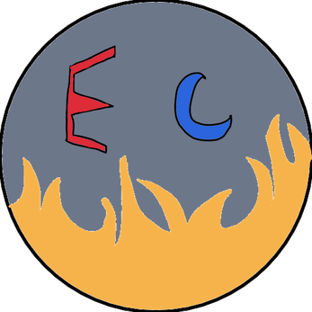

Blocky Boys's Adventure(Rage game/Platformer)
Puzzle Script-Silly Little Block(Box pusher game)
A hard 2D platformer made in construct 3. I created the assets and code for the game.

Drag & Drop
Fightatron
A simple yet hard game I made using construct 3
where you simply drag and drop the ball onto the goal


T.V.Scape
(WIP) A Horror and narativ game I am making using Construct 3
I made the assets using piskel and I constructed all the code for the game

Echo Chmabers
A platformer game where you escape the dugeons with help of your twin
I created most of the art such as enemies,hud, pickups, potions
